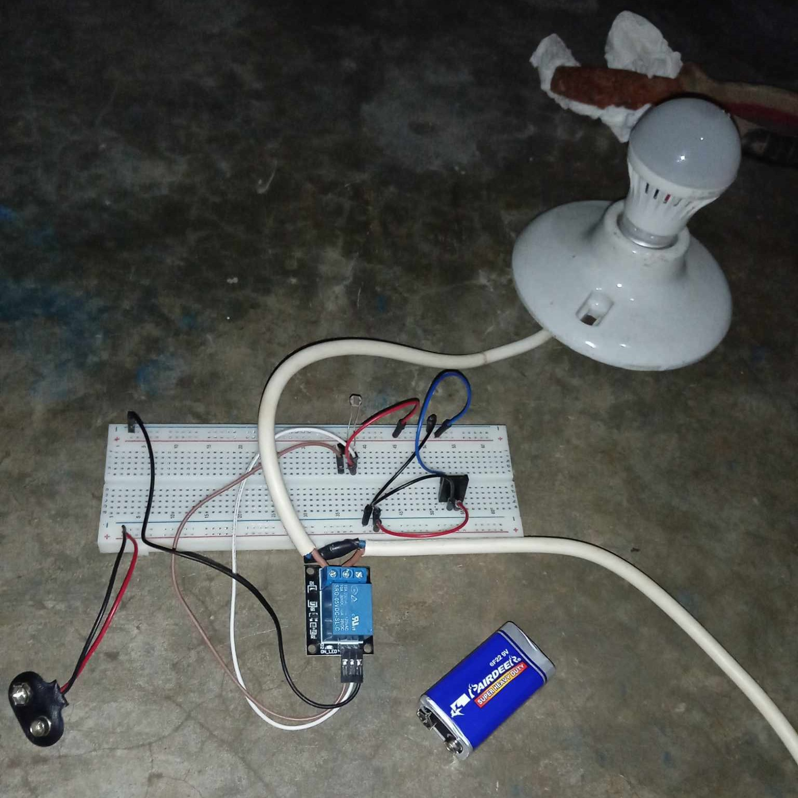
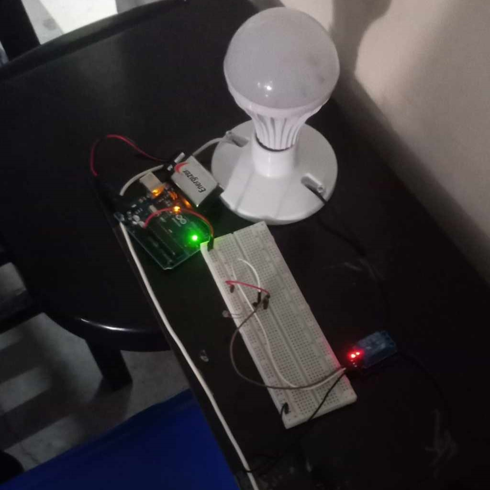

PAMANTASAN NG LUNGSOD NG MUNTINLUPA
COLLEGE OF INFORMATION TECHNOLOGY AND COMPUTER STUDIES
University Rd., Poblacion, Muntinlupa City
Summary
This summary provides components and steps on how to process the PCB layout and to developed it using software and hardware system and tools. The software tools used to construct the software was flux ai, flux ai is a browser-based electronics design tool with built-in support for modern hardware design methodologies: re-usability, collaboration, and simulation. The components and steps required is listed below.
Components
1. ZNJ904 > I1
2. DC Supply > V1
3. Photo resistor LDR > PH-LDH
4. SRD-U5DC-SL-C1 > K1
Terminal
1. -
2. -
3. +
4. +
5. V
6. C
7. L
Nets
1. NC1 1 > rn1 Dn, R, T1
2. NC1 2 > T1, K1, V1, rn1Dr, F
3. NC1 3 > C, T1, K1
4. NC1 4 > V1, K1
5. NC1 5 > k1
6. NC1 6 > I
7. NC1 7 > I, K1
Bulb
Wirings
Socket bulb light
Breadboard
Steps
1. Connect relay to transistor
2. Connect transistor to LDR
3. Connect AC and Bulb to relay
4. Connect DC to relay

